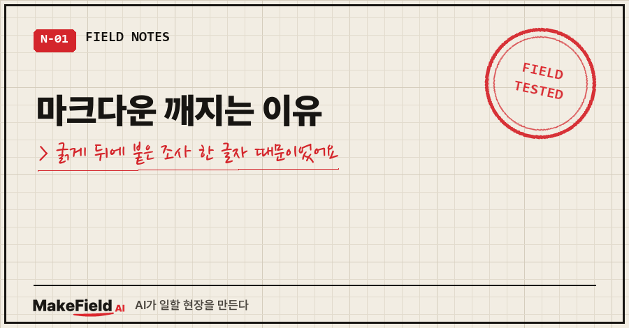
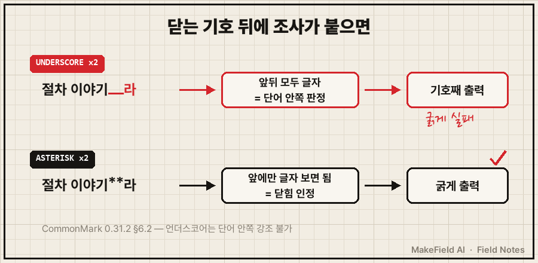
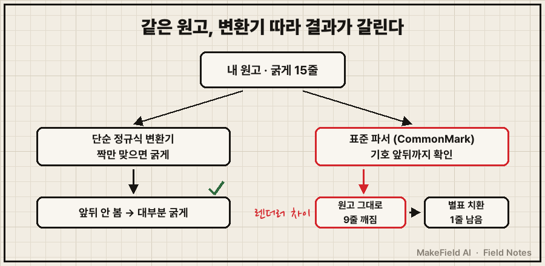
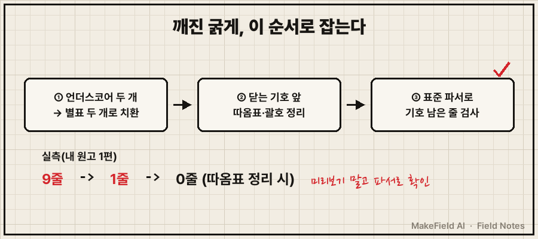

굵게 처리한 글자가 안 굵어지고 기호가 화면에 그대로 찍혀요. 짝은 분명히 맞췄는데도요.
답부터 드리면, 한국어 글에서 마크다운 깨지는 이유는 대부분 굵게 기호 바로 뒤에 붙은 조사예요. 밑줄 두 개(언더스코어 두 개)로 감싼 굵게 뒤에 '이·라·예요'가 띄어쓰기 없이 붙으면, 표준 마크다운(CommonMark) 규칙에서는 닫는 기호로 인정되지 않아 기호가 글자째 남습니다. 별표 두 개로 바꾸면 대부분 풀려요.
핵심 사실 한 줄로 정리하면 이래요. CommonMark 0.31.2 기준으로 언더스코어는 단어 안쪽에서 강조를 열고 닫을 수 없고, 별표는 할 수 있습니다. (→ https://spec.commonmark.org/0.31.2/ §6.2)
공장 설비 제어로 밥 벌어 온 지 15년 된 엔지니어예요.
이 블로그 원고는 전부 마크다운으로 쓰는데, 오늘(2026년 11월 14일) 7월에 올린 글 한 편을 표준 파서에 넣어 봤다가 굵게 15곳 중 9곳이 기호째 남는 걸 봤습니다.
1. 마크다운 굵게가 깨지면 화면엔 이렇게 보여요
같은 문서 안에서 어떤 굵게는 되고, 어떤 건 기호가 그대로 보여요.
제 원고에서 뽑은 두 줄을 표준 파서(markdown-it-py 4.2.0, commonmark 모드)에 넣은 결과입니다.
[입력] 이건 종목 이야기가 아니라 __절차 이야기__라, 매수 추천으로 읽지 말아주세요.
[출력] 이건 종목 이야기가 아니라 __절차 이야기__라, 매수 추천으로 읽지 말아주세요.
→ 기호가 그대로 남음 (굵게 실패)
[입력] __"계획이 바뀐 이유가 뭐지?"__
[출력] <strong>"계획이 바뀐 이유가 뭐지?"</strong>
→ 굵게 성공차이는 딱 하나예요. 실패한 줄은 닫는 기호 바로 뒤에 '라'가 붙어 있고, 성공한 줄은 닫는 기호 뒤가 줄 끝이에요.
2. 마크다운 깨지는 이유, 조사가 '단어 안쪽'으로 읽혀서예요
CommonMark는 강조 기호가 여는 쪽인지 닫는 쪽인지를 기호 앞뒤에 뭐가 붙어 있는지로 판단해요.
한국어는 조사를 앞말에 붙여 쓰잖아요. 닫는 기호 뒤에 '라'가 붙는 순간, 파서 눈에는 그 기호가 단어 한가운데 끼어 있는 걸로 보여요.
스펙 원문은 이렇습니다.
"Intraword emphasis is disallowed for _"
"A double __ can close strong emphasis iff it is part of a right-flanking
delimiter run and either (a) not part of a left-flanking delimiter run or
(b) part of a left-flanking delimiter run followed by a Unicode punctuation character."
"A double ** can close strong emphasis iff it is part of a right-flanking delimiter run."
— CommonMark Spec 0.31.2, §6.2쉽게 말하면 이래요.
- 별표 두 개: 앞에 글자만 붙어 있으면 닫힘 → 뒤에 조사가 붙어도 굵게 됨
- 언더스코어 두 개: 뒤에도 글자가 붙어 있으면 닫힘 실패 → 조사가 붙으면 깨짐
- 별표라도 닫는 기호 바로 앞이 따옴표·괄호이고 뒤에 글자가 붙으면 역시 실패
영어는 강조 뒤에 띄어쓰기가 오니까 이 규칙에 걸릴 일이 드물어요. 조사를 붙여 쓰는 한국어에서 유독 자주 깨지는 이유가 이거예요.

3. 제 원고로 돌려 보니 15곳 중 9곳이 깨졌어요
검사한 원고는 AI한테 매달 소액 적립식 투자를 맡겼다가, 계획에 없던 종목이 매수 지시서에 끼어든 걸 질문 하나로 잡아낸 이야기예요.
그 이야기는 아래 '같은 증상, 다른 경우' 절에 링크해 뒀고, 여기선 원고의 굵게 표기만 봤습니다.
굵게가 들어간 15줄을 하나씩 파서에 넣었어요.
[원고 그대로 — 대부분 언더스코어 두 개]
굵게 15줄 → 성공 6 / 실패 9
실패 9줄 공통점: 닫는 기호 바로 뒤에 조사·어미가 붙음 (라 · 였어요 · 이거든요 · 예요 · 하는 …)
성공 6줄 공통점: 닫는 기호 뒤가 띄어쓰기이거나 줄 끝
[기호만 별표 두 개로 일괄 치환]
굵게 15줄 → 성공 14 / 실패 1
남은 1곳: ... 아니라 '절차 감사'(닫는 기호)더라고요
→ 닫는 기호 앞이 작은따옴표, 뒤가 글자 → 별표여도 실패재밌는 건, 이 원고가 블로그에 올라갈 땐 멀쩡했을 가능성이 높다는 거예요.
제 원고 변환 스크립트는 "기호 두 개 사이에 글자가 있으면 굵게"라는 단순한 정규식으로 짝만 찾고, 앞뒤는 안 보거든요.
같은 원고도 변환기에 따라 굵게가 되기도, 깨지기도 합니다. "어디선 되고 어디선 깨지는" 진짜 이유가 이 렌더러 차이예요.

4. 깨진 굵게 고치는 순서
- 언더스코어 두 개로 쓴 굵게를 전부 별표 두 개로 바꿔요. 편집기 '모두 바꾸기'면 되는데, 코드블록 안 변수명까지 바뀌지 않게 조심하세요.
- 닫는 기호 바로 앞이 따옴표·괄호이고 뒤에 조사가 붙어 있으면, 문장 부호를 굵게 밖으로 빼거나 지워요.
깨짐 : ... 아니라 **'절차 감사'**더라고요
고침 : ... 아니라 **절차 감사**더라고요- 문장을 바꾸기 싫으면 HTML 태그를 써요. 강조 기호 규칙을 아예 안 타기 때문에 조사가 붙어도 안전합니다.
<b>절차 감사</b>더라고요- 굵게가 아니라 줄바꿈이 사라지는 경우라면 원인이 달라요. 마크다운은 줄만 바꾼 걸 '부드러운 줄바꿈'으로 보고, 화면에선 띄어쓰기 하나로 합칠 수 있어요(CommonMark §6.8 "A soft line break may be rendered in HTML either as a line ending or as a space"). 실제 줄을 바꾸려면 줄 끝에 공백 두 개, 백슬래시, 또는 br 태그를 넣으면 됩니다(GitHub Docs 기본 서식 문법). 문단을 나누려면 빈 줄 하나를 두고요.
[입력] 첫째 줄(줄바꿈만) → <p>첫째 줄⏎둘째 줄</p> → 브라우저에선 한 줄로 붙어 보임
[입력] 첫째 줄(끝에 공백 두 개) → <p>첫째 줄<br />⏎둘째 줄</p> → 실제로 줄이 바뀜5. 고쳤는지 확인하는 방법
미리보기는 내 편집기 기준일 뿐이에요. 표준 규칙으로 보려면 파이썬 파서에 넣어 기호가 남는 줄만 뽑으면 됩니다.
pip install markdown-it-pyimport sys
from markdown_it import MarkdownIt
md = MarkdownIt("commonmark")
text = open(sys.argv[1], encoding="utf-8").read()
for no, line in enumerate(text.splitlines(), 1):
html = md.renderInline(line)
if "**" in html or "__" in html: # 렌더링 뒤에도 기호가 남았다 = 굵게 실패
print(no, line[:60])출력이 한 줄도 없으면 통과예요. 단, 코드블록 안의 기호도 잡히니 그 줄은 무시하면 됩니다.
제 원고는 이 검사로 9줄 → 별표 치환 후 1줄이 나왔고, 남은 1줄이 위 2번(따옴표) 경우였어요.

같은 증상, 다른 경우
- 기호가 아니라 PDF로 바꿨더니 코드블록·문단이 흩어진다면 마크다운 문법이 아니라 변환 단계 문제예요 → 마크다운 PDF 변환 깨짐, 스크립트는 세 번 다 성공했어요
- 기호가 아니라 한글 글자 자체가 외계어로 보인다면 문법이 아니라 인코딩 문제예요 → PowerShell 한글 깨짐
- 이 글에서 검사한 원고의 원래 이야기(AI가 계획에 없던 종목을 끼워넣은 건) → AI 투자 자동화, 맡겨두면 안 되는 이유
자주 묻는 질문
Q. 깃허브에선 되던 굵게가 다른 데 붙여넣으니 깨져요. 왜 그런가요?
렌더러마다 강조 규칙이 달라서예요. 짝만 맞으면 굵게 처리하는 변환기도 있고, CommonMark처럼 기호 앞뒤까지 따지는 파서도 있어요. 조사 앞 굵게는 별표 두 개로, 닫는 기호 앞엔 따옴표 없이 쓰는 게 가장 안전합니다.
Q. 굵게 뒤에 띄어쓰기를 넣으면 되지 않나요?
기술적으로는 돼요. 언더스코어여도 닫는 기호 뒤가 띄어쓰기면 굵게가 됩니다(제 검사에서도 확인). 다만 '절차 이야기 라'처럼 한국어 띄어쓰기가 틀어지니, 별표로 바꾸는 쪽을 권해요.
Q. 별표로 바꿨는데도 기호가 그대로 보이면요?
닫는 기호 바로 앞이 따옴표·괄호인지 먼저 보세요. 아니라면 붙여넣은 곳이 마크다운을 해석하지 않는 편집기일 수 있어요. 그땐 편집기의 굵게 버튼을 써야 합니다.
정리
마크다운 깨지는 이유를 한국어 기준으로 줄이면 "조사를 붙여 쓰는 습관 × 기호 앞뒤를 따지는 표준 규칙"이에요.
굵게는 별표 두 개로, 닫는 기호 앞엔 문장 부호 없이, 확인은 미리보기 말고 표준 파서로.
저는 다음 원고부터 이 검사 스크립트를 발행 전에 한 번씩 돌려 볼 생각입니다.
여러분은 어디에 붙여넣다가 굵게가 깨지셨나요?
AI랑 일하면서 막혔다 풀린 기록은 makefield.ai 에도 모아 두고 있어요.
출처
- CommonMark Spec 0.31.2, §6.2 Emphasis and strong emphasis("Intraword emphasis is disallowed for _", 이중 언더스코어·별표 닫힘 규칙), §6.8 Soft line breaks → https://spec.commonmark.org/0.31.2/ (2026-11-14 확인)
- GitHub Docs, Basic writing and formatting syntax(굵게 표기, .md 파일 줄바꿈: 공백 두 개·백슬래시·br 태그) → https://docs.github.com/en/get-started/writing-on-github/getting-started-with-writing-and-formatting-on-github/basic-writing-and-formatting-syntax (2026-11-14 확인)
- 실측: 2026-11-14 본 블로그 원고 1편(굵게 15줄)을 markdown-it-py 4.2.0 commonmark 모드로 렌더링(경로·계정 제외)
태그: #마크다운깨지는이유 #마크다운굵게안됨 #마크다운볼드깨짐 #마크다운조사 #마크다운줄바꿈 #CommonMark #마크다운문법 #마크다운한글 #별표두개 #언더스코어 #markdownit #마크다운미리보기 #마크다운오류 #막힐때해결 #MakeFieldAI